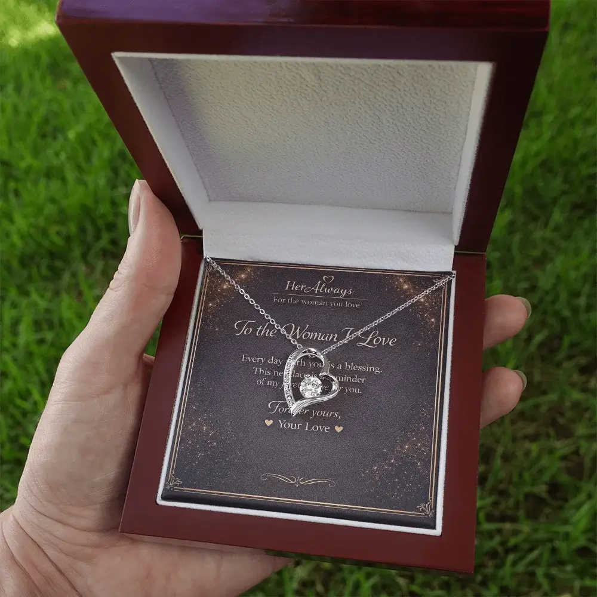
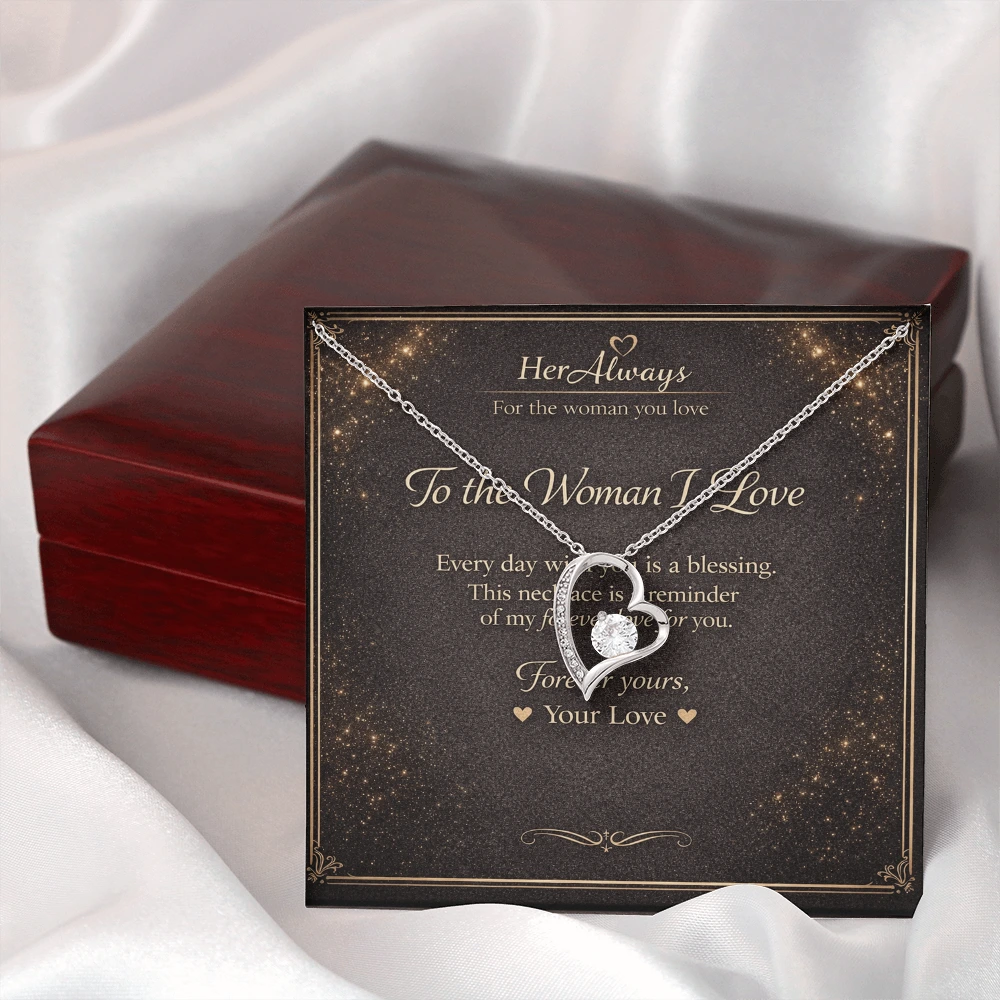

The best birthday gift for a long-distance girlfriend is something she can wear or use every day, paired with a call or plan for her actual birthday. If you have four weeks or more, send a keepsake like a necklace with a personal card. If you have less than a week, send a delivered treat or flowers, add a voice or video message, and save the keepsake for a second gift.
Most gift lists for long-distance couples are long product roundups. This guide is different: it starts with how much time you have, then helps you choose by your situation, and tells you what to write on the card.
What to Send by Days Left
Order-by date tool | Last minute | By situation | Ideas | The day itself | Card messages | FAQ
| Time left | Best choice | Why |
|---|---|---|
| Under 1 week | Local delivery (flowers, cake, a meal) plus a video or voice message | Arrives on the day. Shipped jewelry will not make it. |
| 1 to 4 weeks | A letter or photo gift, or a necklace if ordered right away | Tight for worldwide shipping, so check the tool below. |
| 4 weeks or more | A necklace with a message card, plus a call | Enough time for 6 to 15 business days of shipping. |
Not sure? Send one small surprise on her birthday and a keepsake that arrives around it. She gets the moment and the memory.
Can a Necklace Arrive in Time? (Order-by Date Tool)
Our necklaces ship worldwide in 6 to 15 business days. Enter her birthday to see your latest safe order date. The tool adds 2 extra business days as a cushion.
Last-Minute Birthday Gifts for a Long-Distance Girlfriend
If her birthday is in a few days, skip anything that has to cross borders. These work in under a week:
- Local delivery. Flowers, a cake, or a meal from a restaurant near her. Order for a time she will be home.
- A personal video. Record 2 or 3 minutes about why you love her, with photos from your time together. It costs nothing and she can rewatch it.
- A “open when” letter set. Write three short letters, photograph them, and send them by message: “open this morning,” “open at lunch,” “open tonight.”
- A watch-together night. Pick her favorite movie, sync the start, and order the same takeaway.
- A gift card with a twist. Add a note that you picked it for a specific reason, not because you ran out of ideas.
Then order a keepsake that arrives a little late. Tell her it is coming, so the delay feels like part of the plan, not an afterthought.
Choose by Your Situation
| Your situation | Go for | Skip |
|---|---|---|
| Not met in person yet | Words and effort: a letter, a video, a shared playlist, flowers | Jewelry, anything that feels like a big commitment |
| Together under 6 months | A personal touch, like a photo gift or a simple pendant with a light card | Rings, “forever” wording |
| Together a year or more | A necklace with a message card, plus a call | Generic gifts that could be for anyone |
| Seeing each other soon | A smaller gift now, a bigger plan for your visit | Spending everything before you meet |
If this is her first birthday since you started dating, our first birthday gift for girlfriend guide goes deeper on what suits each stage.
12 Birthday Gift Ideas for a Long-Distance Girlfriend, by Budget
Pick by budget first, then check the arrival time. Prices are typical ranges and can change, so check the seller before you order.
| Budget | Ideas |
|---|---|
| Free | Video message, “open when” letters, watch-together night |
| Under $30 | Shared dinner gift card, couples card game |
| $30 to $100 | Flowers or a treat, photo gift or map art, necklace with a message card |
| $100 and up | Touch bracelets or lamps, digital photo frame |
| Any budget | Care package or subscription, class together |
1. A personal video message
Record two or three minutes about why you love her, with clips or photos from your time together. She can rewatch it on a bad day, which a one-off call cannot offer.
2. “Open when” letters
Write short letters labeled “open this morning,” “open when you miss me,” and “open tonight.” A handwritten letter is cheap, and it only works because you know her.
3. A watch-together night
Pick her favorite film, start it at the same second, and order the same takeaway. Add a playlist of songs that remind you of her.
4. A shared dinner gift card
Send a delivery gift card for a restaurant or app she can use where she lives, then eat together on video. Pick a place she already likes so it feels chosen, not generic.
5. A couples card game
A deck of questions and prompts gives your video calls something to talk about beyond your day. It suits couples who already call often and want more depth.
6. Flowers or a treat by local delivery
Order from a florist or bakery near her, not an international shop, and choose a delivery time she will be home. This is the best last-minute option for a shipped gift.
7. A photo gift or custom map art
A framed photo of a day you shared, or a print showing both your cities with a line between them, makes the distance part of the story. Check the seller’s production time before you order.
8. A necklace with a message card
A necklace sits close to the heart and is worn daily, so it keeps you present when you are not. It also arrives with your words, which matters most from far away. To open it together on video, see how to give a necklace by mail with a video call.

The Infinity Love Necklace ($59.95) fits distance well, since infinity suggests love that does not end. See what an infinity necklace means before you choose. Check import rules for her country before you order.
When it is the wrong gift: if you have not met yet, or the relationship is very new, a necklace may feel like too much. Order at least four weeks ahead.
9. Touch bracelets or touch lamps
These light up or vibrate when you touch yours. They are fun, but compare before you buy.
| Gift | Typical cost | Trade-off |
|---|---|---|
| Touch bracelets | Around $69 each (you each need one) | Needs charging and setup on both sides |
| Touch lamps | Around $198 for a pair | Both of you need Wi-Fi, and it stays in one room |
| Necklace with message card | $59.95 to $109.95 | Worn without setup, but takes 6 to 15 business days to arrive |
Touch-gift prices are from retailer listings in The Knot’s long-distance gift roundup (updated October 2025) and can change. A necklace needs nothing from her except wearing it.
10. A digital photo frame
Load it with photos of the two of you before you send it. Most Wi-Fi frames let you keep adding photos after you hand it over, so the gift grows with each memory. She needs Wi-Fi, and it is one of the pricier options here.
11. A care package or subscription
Fill a box with her favorite snacks, a candle, a small skincare item and a card. Or choose a monthly coffee, tea or snack subscription, so something from you arrives each month. It works best when it feels like you studied her, not like a generic box.
12. A class you take together
Book an online cooking, pottery or language class and join on video. You get a shared activity, and nothing has to cross a border. Choose something she has mentioned wanting to try.
Not sure which to choose? Match one free idea, like a video message, with one paid gift that arrives around her birthday. She gets the moment on the day and something to keep afterward.
Make Her Birthday Feel Shared
A gift is half the answer. The other half is the day itself:
- Check the time zones. Pick a call time that is evening for her, even if it is an odd hour for you.
- Time a small surprise. Have flowers or a treat arrive in the morning her time.
- Do one thing together. Eat the same meal, watch a film, or read a letter aloud on video.
- Plan the next visit. Give her a date to look forward to, even a rough one.
What to Write on the Card
Keep it to one honest sentence about her and one about the next time you see each other. Write in your own words:
“I wish I could hand you this myself. I love how you laugh, and I am counting the days until I can hear it in person.”
“Happy birthday. Distance is the only thing I would change about us. Everything else, I would choose again.”
“Wear this, and think of me. Next birthday, I plan to be there.” (Only if you truly mean it.)
If your relationship is new, skip “forever” and heavy promises. Want more to choose from? Our necklace gift message for girlfriend guide has 70+ messages by length and occasion, including long-distance ones.
Mistakes to Avoid
- Ordering too late. A gift that arrives days after her birthday feels like an afterthought.
- Gifts she has to set up. Gadgets that need pairing add work to her day.
- Guilt in the card. “I miss you so much it hurts” makes her birthday about the distance.
- Ignoring time zones. A midnight call she cannot take is worse than no call.
- No plan B. Delays happen. Have a message ready for the day.
A Gift That Arrives With Your Words

If you have four weeks or more, the Forever Love Necklace ($79.95) arrives in a gift box with a message card you write yourself. Order by the date from the tool above.
See the Forever Love NecklaceFAQ: Birthday Gifts for a Long-Distance Girlfriend
What is the best birthday gift for a long-distance girlfriend?
The best gift is one she can use or wear, paired with a call on her birthday. A necklace with a message card works well if you order at least four weeks ahead. If time is short, a delivered treat plus a planned video date works better.
What can I do for my long-distance girlfriend on her birthday?
Plan a shared moment, not only a gift. Have a small surprise arrive on the day, then call her at a time that works in both time zones. Watch a movie together, eat the same meal, or open a letter together on video.
What can I get my long-distance girlfriend for her birthday at the last minute?
Send flowers, a treat or a meal by local delivery, and add a personal video or voice message. Free options also work: a handwritten letter you photograph, a playlist, or a watch-together night. Send a keepsake like a necklace as a second gift.
How far ahead should I order a birthday gift for a long-distance girlfriend?
Order shipped gifts at least four weeks before her birthday. HerAlways necklaces ship worldwide in 6 to 15 business days, so ordering earlier leaves room for delays.
What should I write on a birthday card for a long-distance girlfriend?
Write one honest sentence about her and one about the day you will see each other. Avoid heavy promises if the relationship is new, and skip guilt about the distance.
Is it okay to send jewelry to a long-distance girlfriend?
Yes, if you have been together long enough that a keepsake feels natural. A necklace is worn daily, so it keeps you present. For a new relationship, pick a simple piece and a light message.